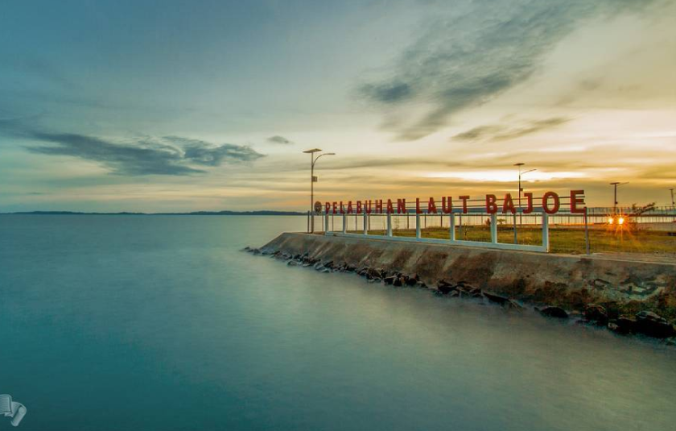

Pelabuhan Sebagai Wisata Bahari

Pelabuhan Terpajang di Sulawesi Selatan
Pelabuhan Bajoe merupakan Destinasi Wisata di Bone yang sangat mengagumkan dengan menyajikan pemandangan dan hamparan lautan yang luas dengan panorama serta keindahannya. Kita bisa menikmati pemandangan sunrise atau matahari terbit di teluk Bone dengan suasana yang berbeda. Keindahan akan semakin tampak pada saat di malam hari, karena adanya lampu lampu yang menghiasi sekitar pelabuhan ini.
Rasanya tidak lengkap rasanya jika Anda berkunjung ke Bone tanpa mampir dulu ke Pelabuhan Bajoe ini. Pelabuhan Bajoe terletak di daerah Kelurahan Bajoe, kecamatan Tanete Rittang Timur, Sulawesi Selatan.
KEMBALI